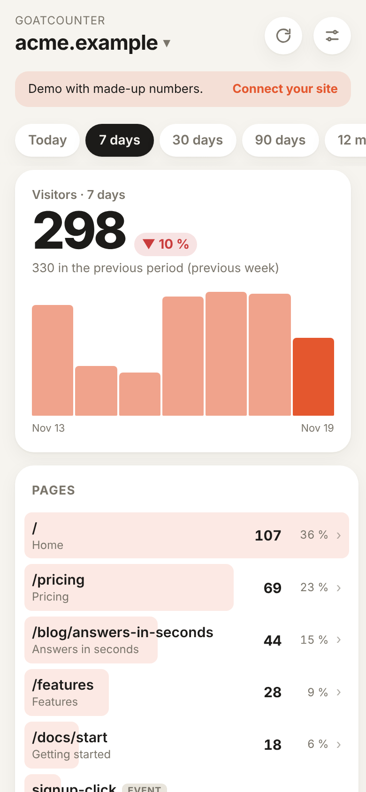

Built for thumbs
Big numbers, a swipeable chart, and tap-to-drill-down on pages, referrers, locations, browsers and systems.
A pocket-sized companion for GoatCounter
GoatPocket is a fast, installable dashboard for GoatCounter analytics. No backend, no sign-up, no tracking – just your numbers, one thumb away.

Big numbers, a swipeable chart, and tap-to-drill-down on pages, referrers, locations, browsers and systems.
Your API token stays in your browser and is only sent to your own GoatCounter site. There is no GoatPocket server.
Switch between every site in your account, see their visitors side by side, and add further accounts with their own tokens.
Add it to your home screen and it behaves like an app – with an offline-ready shell and dark mode.
Requests are throttled to GoatCounter’s rate limit, retried when needed and cached for five minutes on your device.
Plain HTML, CSS and JavaScript modules. Read it in an afternoon, host it anywhere static files can live.
In GoatCounter open User → API and create a token with Read statistics and Read sites.
Open GoatPocket and enter your site code (the part before .goatcounter.com) or your own
domain, plus the token.
Use Share → Add to Home Screen (iOS) or Install app (Android, desktop).
GoatPocket is just a static page. It calls the GoatCounter API directly from your device, so your token and your statistics never pass through a third party. Disconnecting removes everything from the device.
No. GoatPocket is an independent open-source project that uses GoatCounter’s public API. GoatCounter itself is made by Martin Tournoij – if you like it, consider supporting it.
Yes. Enter the full address of your instance (for example stats.example.com). It needs to be
reachable over HTTPS from your phone.
GoatCounter allows four API requests per second and the dashboard needs about a dozen. GoatPocket spaces them out instead of hitting the limit, and caches responses so the next visit is instant.
Read statistics is required. Read sites is optional and enables the site switcher. GoatPocket never writes anything.
Sure – it’s a folder of static files. See the self-hosting guide.
More in the help & docs.
Free, open source and ad-free. If it’s useful to you, buy me a coffee ☕.